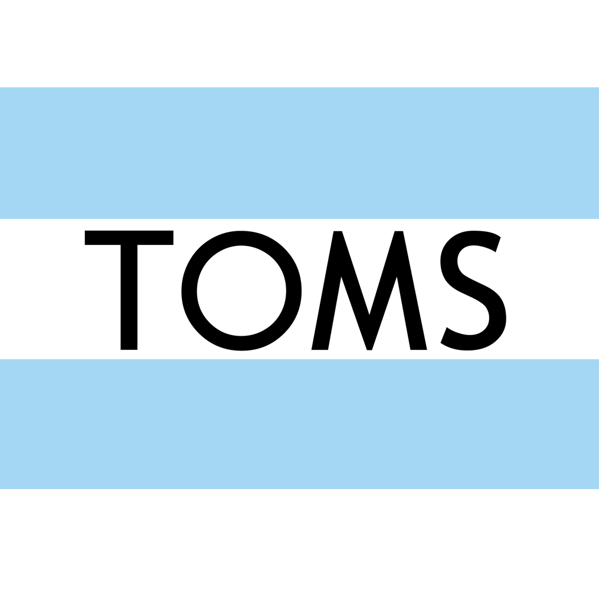

MY GREEN LIFE
SUSTAINABLE FASHION
What makes a fashion brand sustainable?
There is a lot brands need to consider in order to ensure they are not harming people and the environment. The fashion idnustry uses a lot of resources in the form of water, energy, raw materials and even animal products. Sustainability is not only about the environment; being truly sustainable also means looking after people's livelihoods and local communities.

In most of the countries in which garments are produced, untreated toxic wastewaters from textiles factories are dumped directly into the rivers.

Consumer use also has a large environmental footprint due to the water, energy and chemicals used in washing, tumble drying and ironing, as well as to microplastics shed into the environment.
Cotton needs a lot of water and heat to grow, but is usually cultivated in warm and dry areas. Up to 20,000 liters of water are needed to produce just 1kg of cotton.
Here are a few sustainable fashion brands that you may have heard of:
